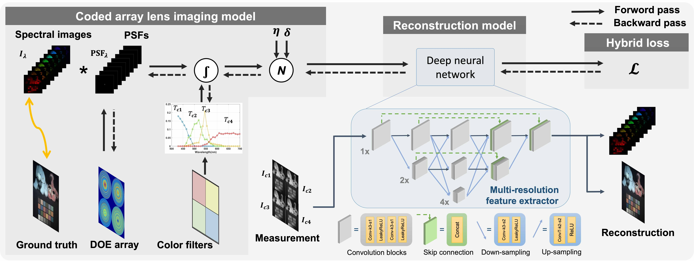

System Overview
We jointly optimize the multi-aperture DOE array, aperture-wise color filters, and image reconstruction network using a hybrid loss function. During each forward pass, the ground truth spectral images are first convolved with the PSFs of the DOE array and then multiplied by the response curves of the color filters. Noise is added to the simulated sensor image, which is then integrated over the monochrome sensor's response for each sub-lens channel: B, G1, G2, and R. These images are input into the multi-resolution feature extractor of the image reconstruction network to recover the final hyperspectral (HS) and RGB images.
System Analysis
We assess the benefits of the proposed multi-aperture setup by analyzing the performance enhancements from spatial and spectral modulation, as well as the effects of independent versus shared spatial modulation across channels. To this end, we compare the proposed approach to variants using a fixed Bayer RGGB color filter and/or a single shared DOE across all color channels. We observe a noticeable decline in both RGB and hyperspectral reconstruction quality when compared to the proposed multi-aperture configuration. We also confirm that Bayer filters, designed to mimic human visual perception, are not tailored to HSI applications, leading to a performance decline compared to our customized color filter.
Experimental Results
We validate the proposed system under both outdoor and indoor environments and compare the reconstruction with reference captures obtained from the commercially available Specim IQ hyperspectral camera. Spectral curves reconstructed by our method closely align with those from the Specim IQ camera, demonstrating exceptional fidelity across 31 channels, further validating our methodology in diverse environments.

BibTeX